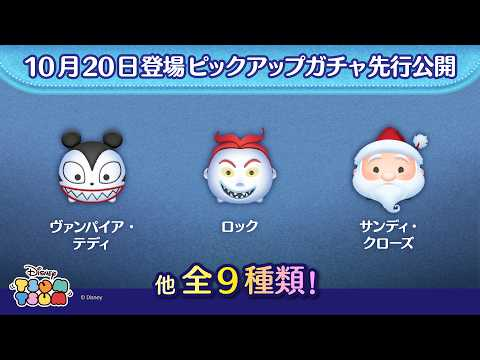
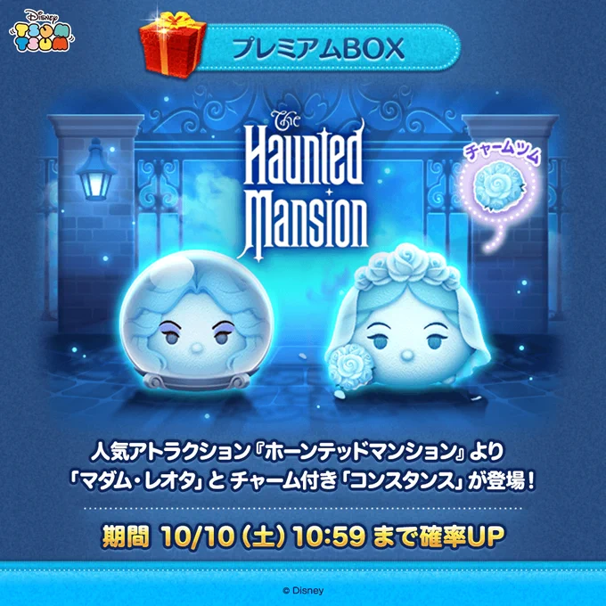
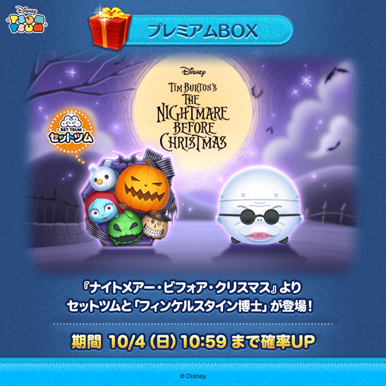
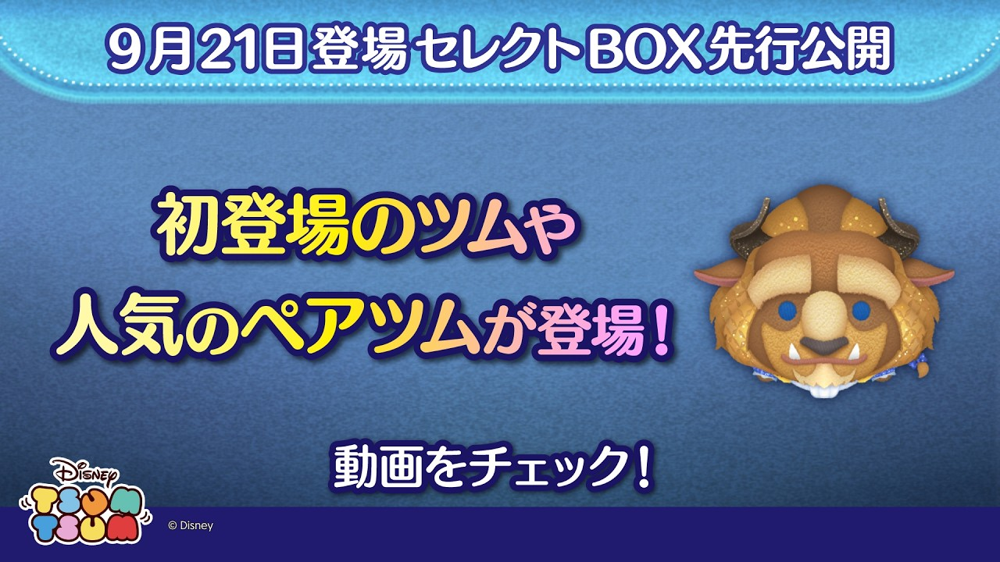
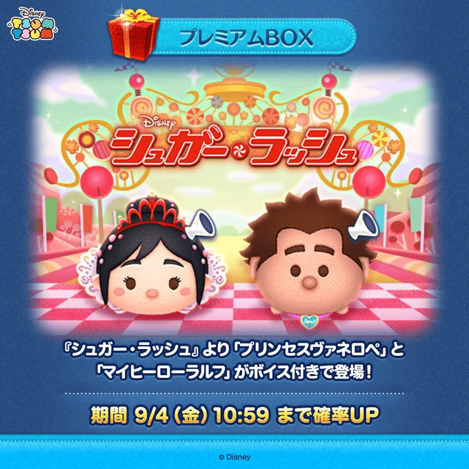
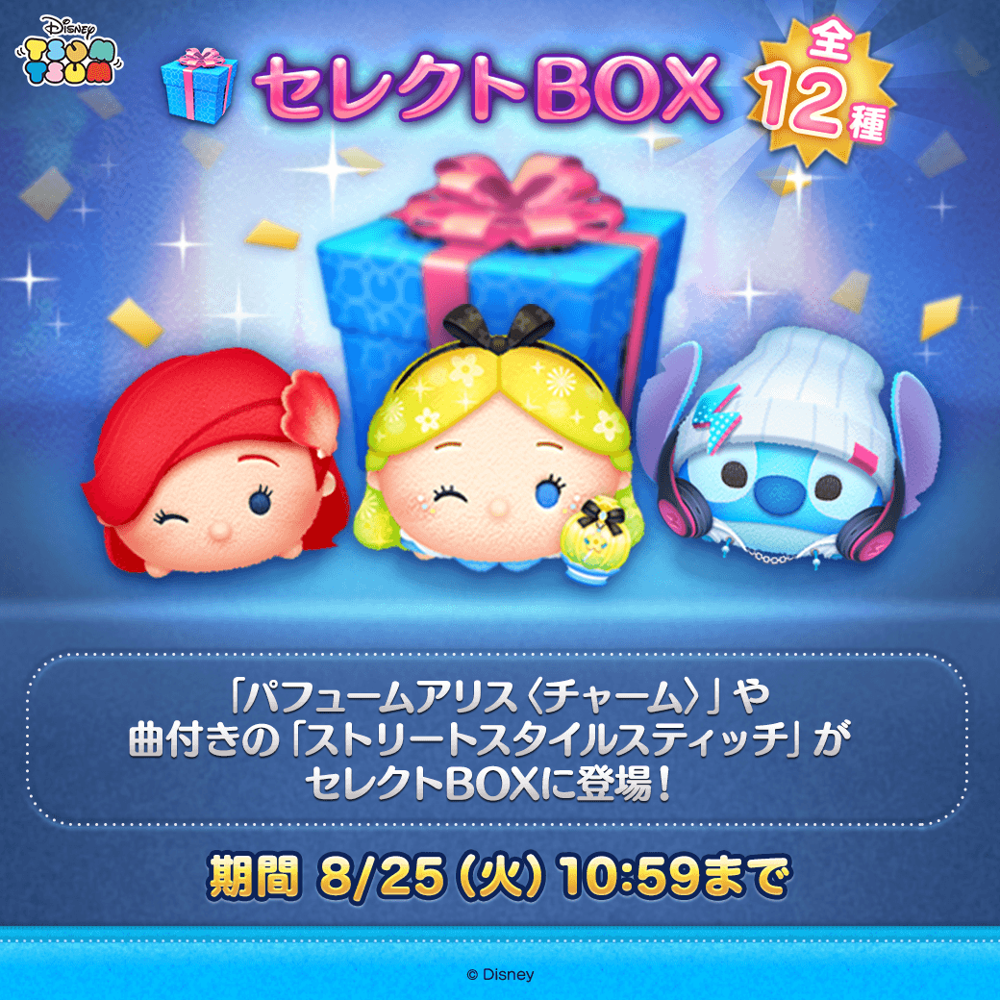
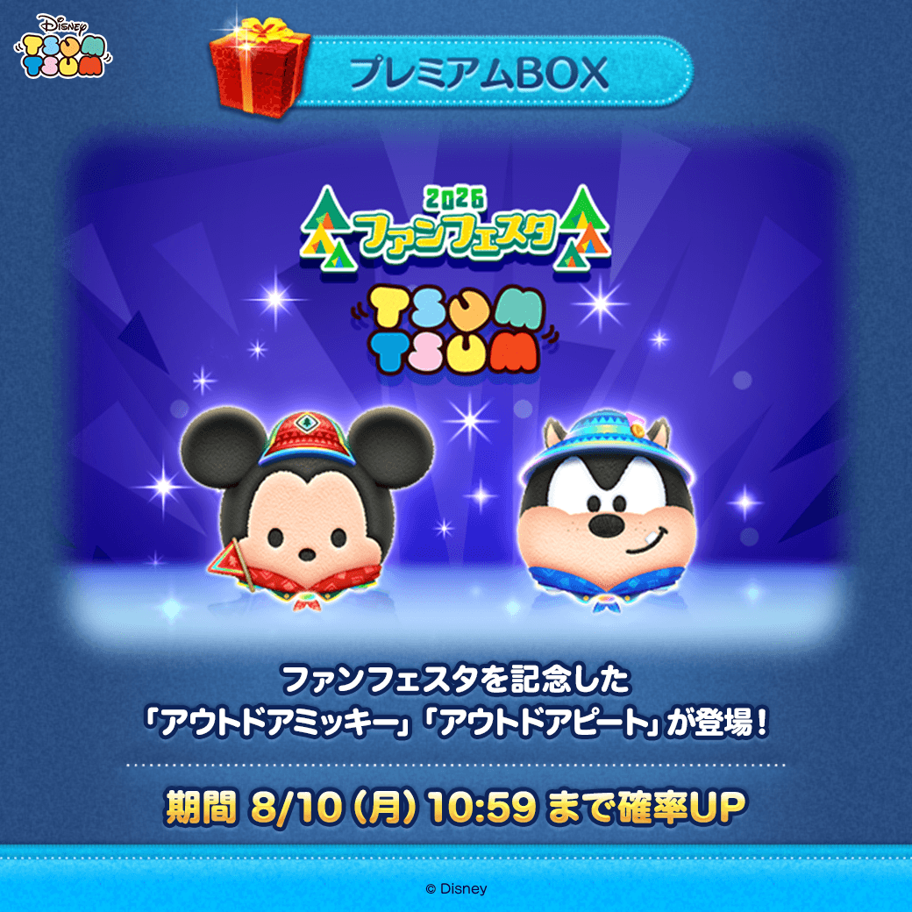

2026.11.04
11月セレクトBOX
2026.11.04
11月セレクトBOXクラリス初復活
11月セレクトBOX｜マジカルステッキ クラリス初復活は引くべき？
全12種で登場。強いクラリスの魅力と、運要素・操作難度・ストレスも踏まえたふめいだよ個人の判断を動画付きで紹介します。
新ツム、イベント、キャンペーン、ガチャを月ごとの記事に整理します。新しい公式発表を確認でき次第、記事を追加または更新します。
記事一覧の整理日：
2026.11.04
11月セレクトBOX全12種で登場。強いクラリスの魅力と、運要素・操作難度・ストレスも踏まえたふめいだよ個人の判断を動画付きで紹介します。
 2026.11.01
11月新ツム評価
2026.11.01
11月新ツム評価公式告知と実プレイ動画を掲載。ふめいだよの結論は2体とも今回はスルー推奨です。評価動画のサムネイルから直接確認できます。
 2026.10.31
最終ボーダー確定
2026.10.31
最終ボーダー確定ランタンショップの最終ボーダー確定後の確認点と、今後公開予定のツムデータが追加された12.11.0更新を整理。ふめいだよの当日動画にもつなげています。

2026.10.23 10月後半最新情報10月20日のピックアップガチャ、ツムツムタワー関連、ビンゴ54枚目など、今年の10月後半に確認できた情報をまとめました。

2026.10.07 第2弾新ツム第2弾2体の登場・確率アップ情報と、ふめいだよの使用感。性能重視ならスルーでもよいという個人的な評価を掲載しました。

2026.10.03 10月最新情報ナイトメアーセット、ヴィランズセットの復活、イベントとキャンペーン。開催中と予告を分け、ふめいだよの個人的なおすすめも掲載しています。

2026.09.21 9月後半追加9月14日以降のセレクトBOX、ピックアップガチャ、ひろば、東京ゲームショウ記念ミッション、ログインボーナスを、開催中・終了済みに分けて整理しました。

2026.09.13 9月最新情報シュガー・ラッシュ新ツム4体、通常イベント、ひろば、終了したBOX、9月13日追加のマリー＋まで、開催状況を分けて整理しました。

2026.08.22 8月後半追加8月20日以降に公式発表された2件を、前回記事と重複しない形で整理した記録です。掲載期間は終了しています。

2026 AUG 8月最新情報新ツム5体、サマーキャンプ、ファンフェスタ、8月16日登場予定のセレクトBOXまで、公式Xの画像と発表を確認して整理しました。